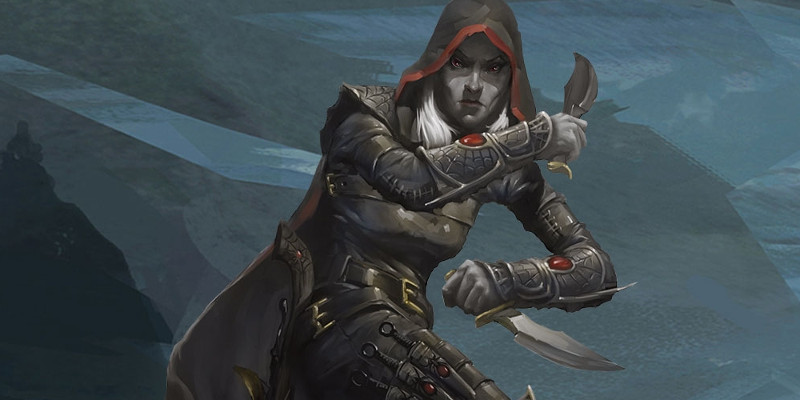

Archétypes de roublard
Au niveau 3, un roublard gagne la capacité Archétype de roublard. Voici des nouvelles options d'archétype :
Éclaireur
Vous êtes doués pour la discrétion et la vie en forêt, ce qui vous permet de partir en reconnaissance au-devant de vos compagnons lors de vos expéditions. Les roublards qui adoptent cet archétype se sentent à leur aise en nature ainsi qu'en présence de barbares et de guerriers, servant souvent comme les yeux et les oreilles des bandes armées de ce monde. Comparativement aux autres roublards, vous êtes outillé pour survivre en milieux sauvages.
Survivaliste
Lorsque vous optez pour cet archétype au niveau 3, vous bénéficiez de la maîtrise des compétences Nature et Survie. Votre bonus de maîtrise est doublé lorsque vous tentez un jet de caractéristique qui implique l'une ou l'autre de ces maîtrises.
Escarmouche
À partir du niveau 3, il est difficile de vous coincer lors d'un combat. Lorsqu'un ennemi termine son tour à 1,50 mètre ou moins de vous, vous pouvez utiliser votre réaction pour vous déplacer de la moitié de votre vitesse. Ce mouvement ne provoque pas d'attaques d'opportunité.
Mobilité supérieure
Au niveau 9, votre vitesse de marche augmente de 3 mètres. Si vous possédez une vitesse d'escalade ou de nage, elles bénéficient également de cette augmentation.
Maître de l'embuscade
À partir du niveau 13, vous menez les embuscades avec brio. Si un de vos ennemis est surpris lors du premier round du combat, vous pouvez utiliser une action bonus à votre tour pour conférer à vos alliées qui vous voient un bonus de +5 à l'initiative. Ce bonus dure jusqu'à la fin du combat. Si le bonus à l'initiative augmente l'initiative d'un allié au-dessus de la vôtre, l'initiative de cet allié est alors égale à la vôtre. De plus, chacun de vos alliés voit sa vitesse augmentée de 3 mètres jusqu'à la fin de son prochain tour.
Frappe soudaine
À partir du niveau 17, vous frappez à une vitesse fulgurante. Si vous utilisez l'action Attaquer à votre tour, vous pouvez tenter une attaque supplémentaire au prix d'une action bonus. Cette attaque peut bénéficier de votre attaque sournoise même si vous l'avez déjà utilisée ce tour-ci, mais seulement si cette attaque est la seule que vous tentez contre cette cible lors de ce tour.
Réanimé
Vous avez eu une expérience transcendante et bouleversante : vous avez connu la mort. Vous avez été mort. Et pourtant, vous êtes aujourd'hui toujours bien vivant. Mais cette vie n'est pas votre première vie, peut-être même pas la deuxième… Votre ou vos vies passées sont confuses mais vous avez tout de même la certitude d’être passé au travers des portes de la mort. Mais ce royaume, ses pouvoirs et les lois qui le régissent ne vous sont pas encore destinés.
Peut-être avez-vous convaincu une divinité de vous laisser rejoindre le plan matériel, peut-être avez-vous signé un accord avec un fiélon ou bien encore avez-vous utilisé un artefact capable de vous ramener d'entre les morts. Quelle que soit la force, les raisons, les moyens ou les chemins qui vous ont permis de vous arracher de la mort, vous connaissez maintenant la vérité sur vous-même : vous êtes l'un des représentants de la mort parmi les vivants.
Réminiscences
À partir du niveau 3, vous vous souvenez de connaissances ou de talents acquis lors de votre précédente vie. Lorsque vous terminez un repos long, vous gagnez la maîtrise d'une compétence ou d'un outil de votre choix. Vous pouvez remplacer cette maîtrise par une autre à la fin d'un repos long.
Âme altérée
À partir du niveau 3, votre nouveau rapport à la mort vous confère les avantages suivants :
- Vous avez un avantage aux jets de sauvegarde contre la maladie et le poison, et gagnez la résistance aux dégâts de poison.
- Vous n'avez pas besoin de manger, de boire et de respirer.
- Vous n'avez pas besoin de dormir. Lorsque vous prenez un repos long, celui-ci est remplacé par au moins quatre heures dans un état inactif et immobile. Dans cet état, vous restez à demi-conscient et pouvez entendre normalement.
Éclats de la tombe
Au niveau 3, vous apprenez à libérer des éclats d'énergie nécrotique à partir de votre corps ressuscité. Immédiatement après avoir utilisé votre Ruse, vous pouvez faire une attaque à distance avec un sort contre une créature située à 9 mètres ou moins de vous, à condition que n'ailliez pas encore utilisé votre Attaque sournoise durant ce tour. Vous maîtrisez cette attaque nécrotique et ajoutez votre modificateur de Dextérité au jet d'attaque et aux dégâts. Une créature touchée par cette attaque subit des dégâts nécrotiques égaux à ceux de votre Attaque sournoise. Cette attaque remplace votre Attaque sournoise pour ce tour.
Communiquer avec les morts
Au niveau 9, vous pouvez créer un lien avec un esprit au travers de son corps. Dans ce cas, vous lancez communication avec les morts sans utiliser de composantes matérielle ni d'emplacement de sort. L'Intelligence est votre caractéristique d'incantation pour ce sort. Communiquer avec les morts de cette façon vous confère temporairement une capacité de votre vie antérieure, mais vous ne savez pas si cela provient de votre passé ou de l'esprit avec lequel vous échangez. Lorsque le sort se termine, vous gagnez un bénéfice au hasard parmi les capacités de la table ci-dessous jusqu'à la fin de votre prochain repos court ou long.
| d3 | Capacité |
|---|---|
| 1 | Vous apprenez à parler, lire et écrire une langue de votre choix. |
| 2 | Vous gagnez la maîtrise d'une compétence ou d'un outil de votre choix. |
| 3 | Vous gagnez la maîtrise d'un jet de sauvegarde de votre choix. |
Une fois que vous avez utilisé le sort avec cette capacité, vous ne pourrez plus l'utiliser à nouveau avant la fin de votre prochain repos court ou long.
Audience avec la mort
À partir du niveau 13, aux portes de la mort, vous pouvez converser avec ses entités. Vous obtenez un avantage aux jets de sauvegarde contre la mort et à chaque fois que vous effectuez un tel jet, votre esprit peut questionner une entité de la mort. Votre question doit être formulée de telle manière qu’il soit possible d'y répondre par « oui », « non » ou « inconnu ». L'entité répondant sincèrement, en utilisant les connaissances de tous ceux qui sont morts.
En outre, chaque fois que vous êtes à 0 point de vie et que vous êtes soigné ou stabilisé, vous pouvez changer une de vos caractéristiques de personnalité : trait, idéal, lien ou défaut.
Déplacement éthéré
À partir du niveau 17, comme un fantôme, vous avez la possibilité de vous glisser dans ou hors du plan éthéré. Vous pouvez désormais utiliser votre Ruse pour vous téléporter vers un espace non occupé situé à 9 mètres ou moins de vous. Vous n'avez pas besoin de voir cet emplacement pour vous y téléporter, mais votre téléportation échoue, gaspillant votre action bonus, si vous essayez de vous téléporter au travers d'une force magique de taille M ou supérieure, comme un mur de force par exemple. Si vous apparaissez dans un espace déjà occupé par une autre créature ou un objet, vous êtes alors instantanément déplacé vers l'espace inoccupé le plus proche et subissez des dégâts de force égaux à 6 fois le nombre de mètres parcourus lors de ce déplacement.
Fantôme
Cette sous-classe se propose de remplacer celle de réanimé (voir plus haut sur cette page), qui n'a pas atteint le seuil de satisfaction attendu par WotC lors d'un sondage.
De nombreux roublards marchent sur un fil entre la vie et la mort, risquant leur propre vie et prenant celle des autres. Et lorsqu'ils s'aventurent sur cette ligne, certains découvrent un lien mystique avec la mort elle-même. Ces roublards qui tirent de la connaissance des morts et s'imprègnent d'énergie négative deviennent au final comme des fantômes. Les guildes de voleurs les apprécient en tant que collecteurs d'informations et qu'espions très efficaces. De nombreux shadar-kai de la Grisombre sont des maîtres de ces techniques macabres, et certains sont prêts à enseigner cette voie. Dans des endroits comme le Thay (Royaumes Oubliés) et Karrnath (Eberron), où de nombreux nécromanciens pratiquent leur art, un fantôme peut devenir le confident et la main droite d'un magicien. Dans les temples des dieux de la mort, le fantôme est un agent qui traque ceux qui tentent de tromper la mort et récupère les connaissances qui, sinon, se perdraient dans la tombe. Comment avez-vous découvert ce sombre pouvoir ? Avez-vous dormi dans un cimetière avant de vous éveiller à vos nouvelles capacités ? Ou les avez-vous acquises dans un temple ou une guilde de voleurs dédié à un dieu de la mort ?
Murmures des morts
Capacité de fantôme de niveau 3
Les échos de ceux qui sont morts commencent à s'accrocher à vous. Chaque fois que vous terminez un repos court ou long, vous pouvez gagner la maîtrise d'une compétence ou d'un outil de votre choix, une présence fantomatique ayant partagé ses connaissances avec vous. Cette maîtrise dure jusqu'à ce que vous utilisiez à nouveau cette capacité.
Gémissements de la tombe
Capacité de fantôme de niveau 3
Lorsque vous poussez quelqu'un vers la tombe, vous pouvez lui faire entendre des gémissements de morts. Immédiatement après avoir infligé les dégâts de votre Attaque sournoise à une créature lors de votre tour, vous pouvez cibler une deuxième créature que vous pouvez voir si elle est située à 9 mètres ou moins de la première créature. Lancez la moitié du nombre de dés d'Attaque sournoise selon votre niveau (arrondi au supérieur), et la deuxième créature subit des dégâts psychiques égaux au total obtenu, alors que les gémissements de morts retentissent autour d'elles pendant un moment. Vous pouvez utiliser cette capacité un nombre de fois égal à votre bonus de maîtrise, et vous récupérez toutes les utilisations dépensées lorsque vous terminez un repos long.
Marques des disparus
Capacité de fantôme de niveau 9
Quand une vie prend fin en votre présence, vous pouvez vous saisir d'une partie de l'âme qui s'en va, un éclat de son essence de vie qui prend une forme physique : au prix d'une réaction quand une créature que vous pouvez voir meurt à 9 mètres ou moins de vous, vous ouvrez une main et une babiole de taille TP y apparaît, une babiole d'âme. Le MD choisit la forme de la babiole ou la tire au hasard sur la table des babioles du Manuel des Joueurs. Tant que vous portez la babiole d'âme sur vous, vous avez un avantage aux jets contre la mort et aux jets de sauvegarde de Constitution, car votre vitalité est renforcée par l'essence de la vie à l'intérieur de l'objet. Vous pouvez porter un nombre maximum de babioles d'âme égal à votre bonus de maîtrise, et vous ne pouvez plus en créer si vous avez atteint le maximum.
Au prix d'une action, vous pouvez détruire l'une de vos babioles d'âme, où qu'elle se trouve. Dans ce cas, vous pouvez poser une question à l'esprit associé à la babiole. L'esprit vous apparaît et répond dans une langue qu'il connaissait lorsqu'il était encore en vie. Il n’est pas obligé de dire la vérité et répond aussi brièvement que possible, ne désirant qu'être libre.
Marche fantôme
Capacité de fantôme de niveau 13
Vous pouvez désormais entrer partiellement dans le royaume des morts en devenant pratiquement un fantôme. Au prix d'une action bonus, vous prenez une forme spectrale. Sous cette forme, vous avez une vitesse de vol de 3 mètres, avec vol stationnaire, et les jets d'attaque contre vous ont un désavantage. Vous pouvez également vous déplacer à travers des créatures et des objets comme s'il s'agissait d'un terrain difficile, mais vous subissez 1d10 dégâts de force si vous terminez votre tour à l'intérieur d'une créature ou d'un objet. Vous restez sous cette forme durant 10 minutes ou jusqu'à ce que vous y mettiez fin avec une action bonus. Pour utiliser à nouveau cette capacité, vous devez terminer un repos long ou détruire l'une de vos babioles d'âme dans le cadre de l'action bonus que vous utilisez pour activer Marche fantôme.
Glas mortuaire
Capacité de fantôme de niveau 17
Lorsque vous utilisez votre capacité de Gémissements de la tombe, vous pouvez désormais infliger des dégâts psychiques à la première et à la deuxième créature.

Écrit par Mike Mearls et Jeremy Crawford, traduit par Puncho, PersoEmma et blueace